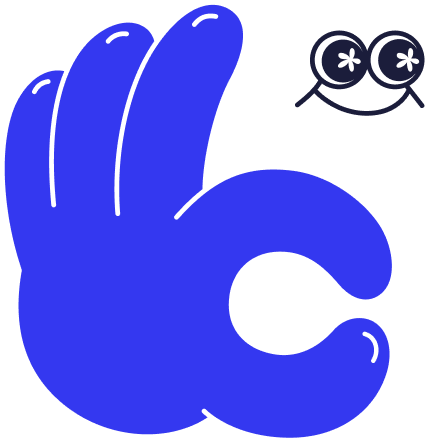

Mico Work Match
by Mico
Choose mode
モードを選択 / 言語を選択
Mini app
production-style
Skips the LINE-chat preamble. Opens straight to the swipe screen — what users will see in the real mini app.
LINEチャットの導入を省略し、スワイプ画面に直行（実際のミニアプリと同じ体験）。
🇯🇵
日本語
→
🇬🇧
English
→
Full demo
walkthrough
Starts with the simulated LINE-chat rich-menu screen. Useful for showing stakeholders the full entry flow.
LINEチャット＋リッチメニューから始まる、フルデモ動線（ステークホルダー向け）。
🇯🇵
日本語
→
🇬🇧
English
→